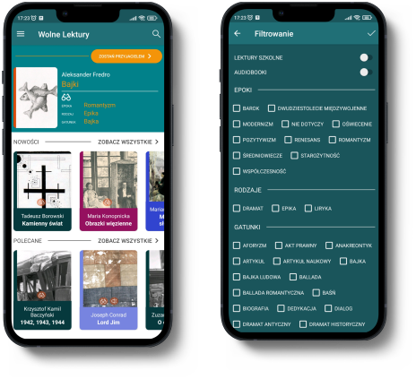
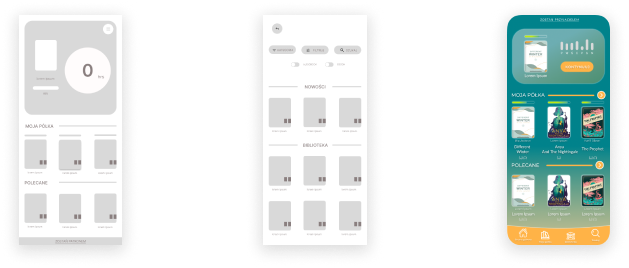
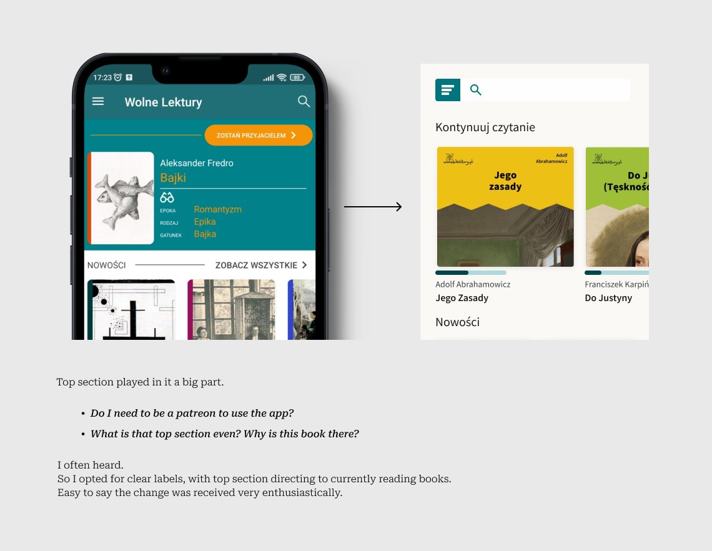
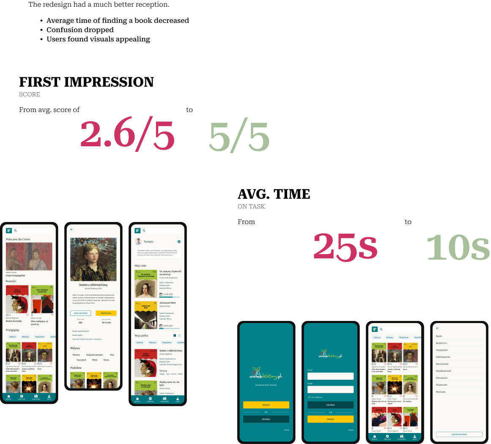

1. Why
As a reader myself, I searched for more convenient access to classic literature than buying (or borrowing) and carrying it with me.
After a quick search I found Wolne Lektury - a free library providing large variety of classics.
However, after trying to find my way around it I just had to give up. Oftentimes these books are difficult and require much effort to process. Maneuvering through chaotic menus and filters added unnecessary effort, discouraging from use, and the books, entirely.
STATISTICS
In 2023
43% read at least 1 book
Number increased by 9 percentage points. The most in 10 years.
Males aged 25-39
Showed increased interest in libraries.
20% of books
Were borrowed from libraries.
TAKE A LOOK
I knew I could do some good here.
Clearly there’s a need for this kind of app.
But... Does a potential user feel the same as I do? Do these ‘problems’ actually cause them trouble? Did I fall
for the
curse of knowledge*?
Or are they entirely different?
These questions planted in me a seed of doubt. I dove into in-store reviews for answers.
LAST UPDATE
2019
DOWNLOADS
>100k
AVG. RATING
3.8
Excitement of opportunity began to sprout.
* Cognitive bias that occurs when an individual, who is communicating with others, assumes that others have information that is only available to themselves, assuming they all share a background and understanding. (https://en.wikipedia.org/wiki/Curse_of_knowledge)
GOAL
Locate app’s current problem areas.
2. Research
Studies show that first impressions are 94% influenced by design and 75% of users are more likely to trust a more visually appealing website. A staggering amount of 52% of users won’t return due to aesthetics.
I wanted to know how appealing is the original design.
80% of users had a negative first reaction.
Everyone was confused about the contents.
Some of the main problems were:
Too many colours
Difficult to read
Confusion about the features, such as ‘becoming a patron’
Based on my findings I created a user persona of a potential user-student as they are the primary target audience of the company.
At first I also looked at a user persona of an avid reader but research has shown changes tailored more towards students would also benefit a casual user.
USER PERSONA
Maciek, 17
Student
Struggles
/ Very little time and motivation to read
/ Trouble finding similar books for referances and study
/ Limited home budget
Wants
/ Clear track of progress
/ Easily accessible library of his books
“I’m always in a hurry.”
3. Ideation
I began sketching in my notebook. I came to realize I can’t change the layout too much to not confuse existing users. Having prepared a couple of ideas I began testing them by asking similiar questions as in the initial research.
My first ideas weren’t successful. Although users liked some of the updated features there were still problems to solve.
I wanted to place statistics section at the very top but it turned out to be too invasive and not helpful.
FEEDBACK
“Button names are unclear”
“Text could be bigger”
“It takes a lot of time to scroll through categories”
Knowing about Miller’s law, I wanted to decrease cognitive load by progressive disclosure.
WHAT & WHY
Bringing order and symetry to the design improved peoples well-being. Clear labeling got rid of confusion accompanying original design. People didn’t know what they can do, or didn’t understand features, so they were more likely not to use them and further explore the app.
WORKING WITH DEVS
Design changes allowed to build framework of reusable components, adjustable for purpose. Similarity in build and adherence to a grid meant easy upkeep and easier time implementing new features.
4. Final design
CONCLUSIONS
There’s always room for improvement.
Even though fixing design principles could save the problem, you can’t neglect research. Sometimes ideas, even the good ones, don’t suit the goal. However, many problems can’t be solved through improving UX. The app’s issues would have to be resolved through implementing new functionalities.